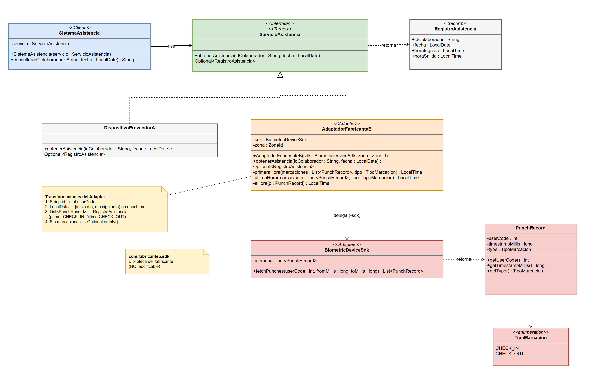

Escenario 02 · Integración de dispositivos biométricos
Patrones de Diseño de Software · Actividad 2 · Patrón estructural Adapter
0Escenario
Una universidad registra la asistencia de sus colaboradores mediante un contrato común que, dada una persona y una fecha, devuelve información normalizada: identificación, fecha, hora de ingreso y hora de salida. Los dispositivos del proveedor histórico ya cumplen ese contrato.
Se adquieren equipos de otro fabricante cuya biblioteca no puede modificarse y expone una interfaz distinta: recupera una colección de marcaciones con operaciones, parámetros y tipos propios. La universidad necesita mantener estable su contrato, evitar la dependencia del proveedor y poder incorporar en el futuro equipos de otros fabricantes.
1Problema estructural
Hay una incompatibilidad de interfaces entre el cliente (sistema institucional) y un componente existente que no puede modificarse (SDK del fabricante B):
| Aspecto | Contrato institucional | SDK Fabricante B |
|---|---|---|
| Operación | obtenerAsistencia(id, fecha) | fetchPunches(userCode, fromMillis, toMillis) |
| Identificador | String | int |
| Fecha | LocalDate | rango epoch en milisegundos |
| Resultado | un RegistroAsistencia (ingreso / salida) | List<PunchRecord> (marcaciones sueltas) |
No se puede modificar el cliente, porque se acoplaría al proveedor. Tampoco el SDK, porque se perdería la compatibilidad con versiones futuras. Se necesita un intermediario que convierta una interfaz en la otra.
2Patrón seleccionado: Adapter (de objetos)
- Intención GoF: convertir la interfaz de una clase en otra que el cliente espera, sin modificar a ninguna de las dos.
- Variante de objetos (composición), no de clases (herencia): Java no admite herencia múltiple de clases, el SDK puede ser
finalo cambiar entre versiones, y la composición reduce el acoplamiento y permite inyectar el SDK. - Extensibilidad (OCP): un proveedor nuevo solo requiere un adaptador nuevo (p. ej.
AdaptadorFabricanteC) y el cliente no se toca. - Alternativas descartadas: Facade simplifica un subsistema pero no lo ajusta a un contrato existente. Bridge se diseña de antemano para separar abstracción e implementación, y aquí la incompatibilidad ya está dada.
3Diagrama de clases UML

4Participantes del patrón
| Rol (GoF) | Clase | Responsabilidad |
|---|---|---|
| Client | SistemaAsistencia | Consulta la asistencia usando solo el contrato institucional. |
| Target | ServicioAsistencia (+ RegistroAsistencia) | Contrato estable y estructura normalizada. |
| Adaptee | BiometricDeviceSdk (+ PunchRecord, TipoMarcacion) | Biblioteca del fabricante B, incompatible y no modificable. |
| Adapter | AdaptadorFabricanteB | Implementa el Target, compone al Adaptee y traduce parámetros y resultados. |
| Implementación nativa | DispositivoProveedorA | Proveedor histórico. Ya cumple el contrato y no necesita adaptador. |
Transformaciones que realiza el Adapter
String idColaborador→int userCode.LocalDate fecha→ rango[inicio del día, inicio del día siguiente)en epoch ms segúnZoneId.List<PunchRecord>→RegistroAsistencia: ingreso =CHECK_INmás temprano, salida =CHECK_OUTmás tardío.- Sin marcaciones →
Optional.empty().
5Implementación (Java 17)
Estructura de paquetes. El paquete com.fabricanteb.sdk simula la biblioteca externa.
src/
├── universidad/
│ ├── Main.java
│ ├── asistencia/ ServicioAsistencia · RegistroAsistencia · SistemaAsistencia
│ └── dispositivos/ DispositivoProveedorA · AdaptadorFabricanteB
└── com/fabricanteb/sdk/ BiometricDeviceSdk · PunchRecord · TipoMarcacionServicioAsistencia.javaTarget · src/universidad/asistencia/ServicioAsistencia.java
package universidad.asistencia;
import java.time.LocalDate;
import java.util.Optional;
/** Target: contrato estable del sistema institucional. */
public interface ServicioAsistencia {
Optional<RegistroAsistencia> obtenerAsistencia(String idColaborador, LocalDate fecha);
}RegistroAsistencia.javaTarget (dato normalizado) · src/universidad/asistencia/RegistroAsistencia.java
package universidad.asistencia;
import java.time.LocalDate;
import java.time.LocalTime;
/** Estructura normalizada que espera el sistema institucional. */
public record RegistroAsistencia(String idColaborador, LocalDate fecha,
LocalTime horaIngreso, LocalTime horaSalida) {
}SistemaAsistencia.javaClient · src/universidad/asistencia/SistemaAsistencia.java
package universidad.asistencia;
import java.time.LocalDate;
/** Client: solo conoce el contrato ServicioAsistencia. */
public class SistemaAsistencia {
private final ServicioAsistencia servicio;
public SistemaAsistencia(ServicioAsistencia servicio) {
this.servicio = servicio;
}
public String consultar(String idColaborador, LocalDate fecha) {
return servicio.obtenerAsistencia(idColaborador, fecha)
.map(r -> String.format("%s | %s | ingreso %s | salida %s",
r.idColaborador(), r.fecha(), r.horaIngreso(), r.horaSalida()))
.orElse(idColaborador + " | " + fecha + " | sin registros");
}
}AdaptadorFabricanteB.javaAdapter · src/universidad/dispositivos/AdaptadorFabricanteB.java
package universidad.dispositivos;
import com.fabricanteb.sdk.BiometricDeviceSdk;
import com.fabricanteb.sdk.PunchRecord;
import com.fabricanteb.sdk.TipoMarcacion;
import universidad.asistencia.RegistroAsistencia;
import universidad.asistencia.ServicioAsistencia;
import java.time.Instant;
import java.time.LocalDate;
import java.time.LocalTime;
import java.time.ZoneId;
import java.util.List;
import java.util.Optional;
/** Adapter (de objetos): traduce ServicioAsistencia -> BiometricDeviceSdk. */
public class AdaptadorFabricanteB implements ServicioAsistencia {
private final BiometricDeviceSdk sdk;
private final ZoneId zona;
public AdaptadorFabricanteB(BiometricDeviceSdk sdk, ZoneId zona) {
this.sdk = sdk;
this.zona = zona;
}
@Override
public Optional<RegistroAsistencia> obtenerAsistencia(String idColaborador, LocalDate fecha) {
// 1. Transformar parametros: String -> int, LocalDate -> rango epoch
int userCode = Integer.parseInt(idColaborador);
long desde = fecha.atStartOfDay(zona).toInstant().toEpochMilli();
long hasta = fecha.plusDays(1).atStartOfDay(zona).toInstant().toEpochMilli();
// 2. Delegar en la operacion propia del fabricante
List<PunchRecord> marcaciones = sdk.fetchPunches(userCode, desde, hasta);
if (marcaciones.isEmpty()) {
return Optional.empty();
}
// 3. Transformar resultado: coleccion de marcaciones -> registro diario
LocalTime ingreso = primeraHora(marcaciones, TipoMarcacion.CHECK_IN);
LocalTime salida = ultimaHora(marcaciones, TipoMarcacion.CHECK_OUT);
return Optional.of(new RegistroAsistencia(idColaborador, fecha, ingreso, salida));
}
private LocalTime primeraHora(List<PunchRecord> marcaciones, TipoMarcacion tipo) {
return marcaciones.stream().filter(p -> p.getType() == tipo)
.map(this::aHora).min(LocalTime::compareTo).orElse(null);
}
private LocalTime ultimaHora(List<PunchRecord> marcaciones, TipoMarcacion tipo) {
return marcaciones.stream().filter(p -> p.getType() == tipo)
.map(this::aHora).max(LocalTime::compareTo).orElse(null);
}
private LocalTime aHora(PunchRecord p) {
return Instant.ofEpochMilli(p.getTimestampMillis()).atZone(zona).toLocalTime();
}
}DispositivoProveedorA.javaImplementación nativa del Target · src/universidad/dispositivos/DispositivoProveedorA.java
package universidad.dispositivos;
import universidad.asistencia.RegistroAsistencia;
import universidad.asistencia.ServicioAsistencia;
import java.time.LocalDate;
import java.time.LocalTime;
import java.util.Optional;
/** Proveedor historico: ya cumple el contrato, no requiere adaptacion. */
public class DispositivoProveedorA implements ServicioAsistencia {
@Override
public Optional<RegistroAsistencia> obtenerAsistencia(String idColaborador, LocalDate fecha) {
return Optional.of(new RegistroAsistencia(idColaborador, fecha,
LocalTime.of(8, 0), LocalTime.of(17, 0)));
}
}BiometricDeviceSdk.javaAdaptee · src/com/fabricanteb/sdk/BiometricDeviceSdk.java
package com.fabricanteb.sdk;
import java.time.LocalDateTime;
import java.time.ZoneId;
import java.util.ArrayList;
import java.util.List;
/** Adaptee: SDK del fabricante con interfaz incompatible (NO modificable). */
public class BiometricDeviceSdk {
private final List<PunchRecord> memoria = new ArrayList<>();
public BiometricDeviceSdk() {
// Datos simulados del dispositivo
ZoneId zona = ZoneId.systemDefault();
memoria.add(new PunchRecord(1001, epoch(2026, 10, 15, 7, 52, zona), TipoMarcacion.CHECK_IN));
memoria.add(new PunchRecord(1001, epoch(2026, 10, 15, 12, 30, zona), TipoMarcacion.CHECK_OUT));
memoria.add(new PunchRecord(1001, epoch(2026, 10, 15, 16, 48, zona), TipoMarcacion.CHECK_OUT));
}
/** Recupera marcaciones de un usuario en el rango [fromMillis, toMillis). */
public List<PunchRecord> fetchPunches(int userCode, long fromMillis, long toMillis) {
List<PunchRecord> res = new ArrayList<>();
for (PunchRecord p : memoria) {
if (p.getUserCode() == userCode
&& p.getTimestampMillis() >= fromMillis
&& p.getTimestampMillis() < toMillis) {
res.add(p);
}
}
return res;
}
private static long epoch(int y, int m, int d, int h, int min, ZoneId zona) {
return LocalDateTime.of(y, m, d, h, min).atZone(zona).toInstant().toEpochMilli();
}
}PunchRecord.javaAdaptee (tipo del fabricante) · src/com/fabricanteb/sdk/PunchRecord.java
package com.fabricanteb.sdk;
/** Estructura propia del fabricante (biblioteca NO modificable). */
public class PunchRecord {
private final int userCode;
private final long timestampMillis;
private final TipoMarcacion type;
public PunchRecord(int userCode, long timestampMillis, TipoMarcacion type) {
this.userCode = userCode;
this.timestampMillis = timestampMillis;
this.type = type;
}
public int getUserCode() { return userCode; }
public long getTimestampMillis() { return timestampMillis; }
public TipoMarcacion getType() { return type; }
}TipoMarcacion.javaAdaptee (tipo del fabricante) · src/com/fabricanteb/sdk/TipoMarcacion.java
package com.fabricanteb.sdk;
/** Tipo propio del fabricante (biblioteca NO modificable). */
public enum TipoMarcacion { CHECK_IN, CHECK_OUT }Main.javaDemostración · src/universidad/Main.java
package universidad;
import com.fabricanteb.sdk.BiometricDeviceSdk;
import universidad.asistencia.ServicioAsistencia;
import universidad.asistencia.SistemaAsistencia;
import universidad.dispositivos.AdaptadorFabricanteB;
import universidad.dispositivos.DispositivoProveedorA;
import java.time.LocalDate;
import java.time.ZoneId;
public class Main {
public static void main(String[] args) {
LocalDate fecha = LocalDate.of(2026, 10, 15);
ServicioAsistencia proveedorA = new DispositivoProveedorA();
ServicioAsistencia fabricanteB =
new AdaptadorFabricanteB(new BiometricDeviceSdk(), ZoneId.systemDefault());
System.out.println("Proveedor A : " + new SistemaAsistencia(proveedorA).consultar("1001", fecha));
System.out.println("Fabricante B: " + new SistemaAsistencia(fabricanteB).consultar("1001", fecha));
System.out.println("Fabricante B: " + new SistemaAsistencia(fabricanteB).consultar("2002", fecha));
}
}Compilación y ejecución
javac -d out $(find src -name "*.java")
java -cp out universidad.MainSalida obtenida
Proveedor A : 1001 | 2026-10-15 | ingreso 08:00 | salida 17:00
Fabricante B: 1001 | 2026-10-15 | ingreso 07:52 | salida 16:48
Fabricante B: 2002 | 2026-10-15 | sin registrosEl mismo cliente funciona igual con el proveedor histórico y con el nuevo fabricante, y no conoce las particularidades de este último.
6Correspondencia UML ↔ código
- Cada clase, atributo y método del diagrama existe en el código con el mismo nombre y la misma firma.
- Realización (
..|>) =implements ServicioAsistenciaenDispositivoProveedorAyAdaptadorFabricanteB. - Asociación
AdaptadorFabricanteB → BiometricDeviceSdk= atributoprivate final BiometricDeviceSdk sdk, inyectado por constructor (composición). - Asociación
SistemaAsistencia → ServicioAsistencia= atributoprivate final ServicioAsistencia servicio. El cliente no importa nada decom.fabricanteb.sdk. - Dependencias «retorna» = tipos de retorno
Optional<RegistroAsistencia>yList<PunchRecord>.
7Uso crítico de IA
Prompt principal
Actúa como Arquitecto de Patrones de diseño de software. Para el Escenario 02 (sistema de asistencia universitario que debe integrar dispositivos biométricos de un nuevo fabricante con biblioteca no modificable e interfaz distinta): identifica el problema estructural, selecciona y justifica el patrón estructural, elabora el diagrama UML, identifica los participantes, implementa la solución en Java y mantén la correspondencia entre UML y código.
Recomendación aceptada
Recomendación: usar Adapter de objetos (composición) en lugar de Adapter de clases (heredar del SDK).
Justificación: Java no permite heredar de dos clases, el SDK puede ser final o cambiar entre versiones, y la composición permite inyectar el SDK (incluso un mock en pruebas). Además deja al cliente totalmente aislado del proveedor, como pide el escenario.
Recomendación modificada / rechazada
Recomendación original: devolver null cuando no hubiera marcaciones y añadir una Abstract Factory / registro de proveedores para elegir el dispositivo por configuración.
Decisión: se reemplazó null por Optional<RegistroAsistencia> y se rechazó la fábrica.
Justificación: Optional deja explícita en el contrato la ausencia de registros y evita NullPointerException. La fábrica resuelve un problema de creación, no estructural, y está fuera del alcance del escenario. Con el Adapter basta para incorporar proveedores futuros (un adaptador por proveedor).